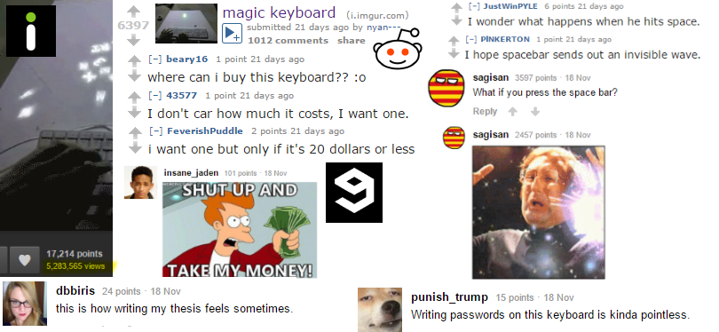
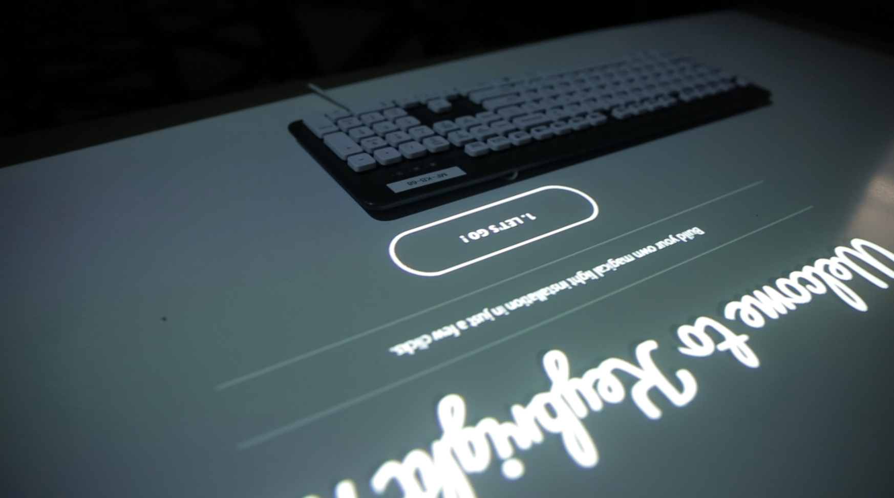
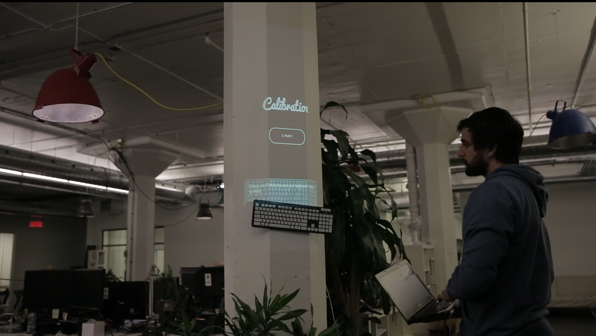
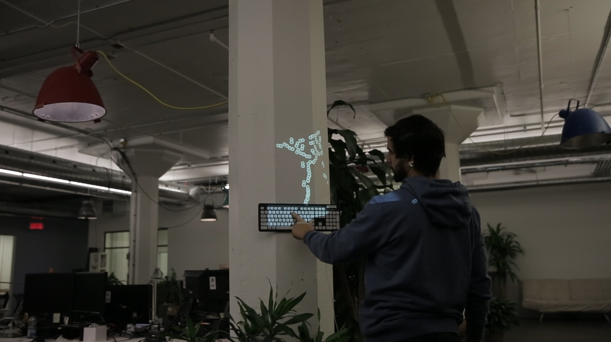
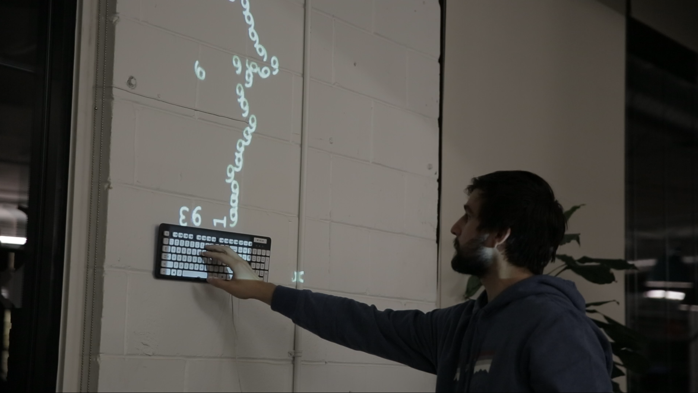
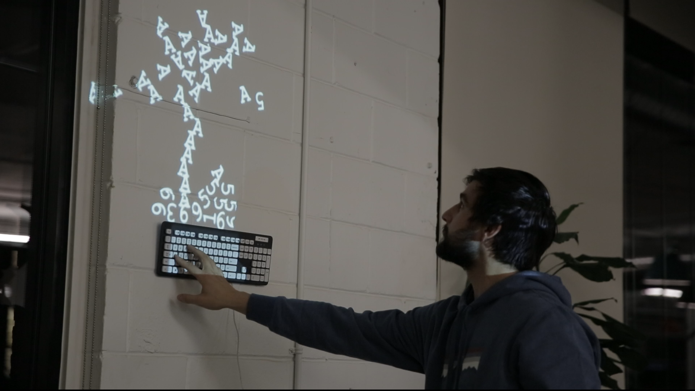
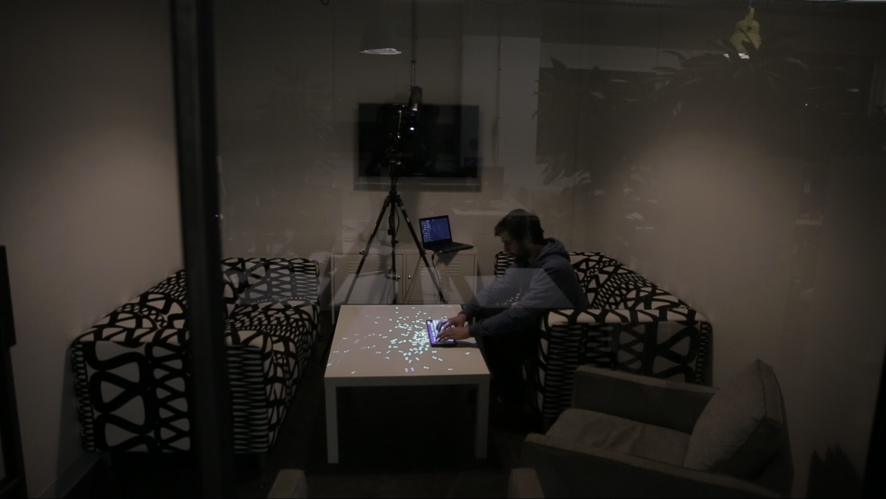
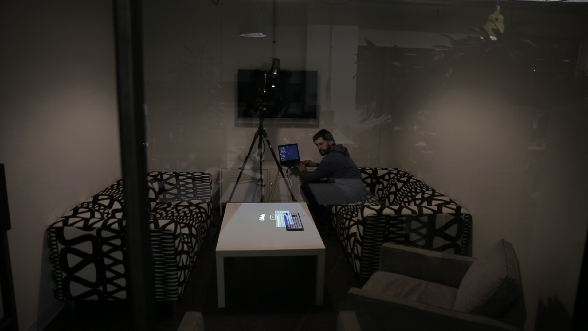

Story
In November 2012, I created a simple installation called Magic Keyboard. At the time, the project was only running on my laptop and wasn't ready to be opened on any device.
All these prototypes were quickly made on my personal time with the toolkit vvvv and the Box2D plugin by @mrvux.
I also had some great support from Moment Factory for the hardware and the LAB space.
Here is the full video for the very first prototype.
I felt it was a fun first step, but it was lacking of an objective, a purpose. So the project was quickly upgraded to somekind of a musical instrument with bouncing colored pyramids on the wall.
"What is the music of your first name ?"
It also evolved to a sketchbook for poetry-making machines at some point where projected light would blend with drawings on paper. I used the very simple and cool makey makey device to create the touch points on the drawing for this one.
And I transformed it to a physical/digital machine that would read tweets and transform the letters to smoke. The blending between white projected letters and physical light/smoke felt like a very interesting avenue to explore for further projects.
In November 2015, thanks to Moment Factory's post, the prototype gained a lot of interest for a week. A lot of people seemed to be willing to try it at home, and I was surprised by the amount of fun and on point reactions. Some redditers actually gave some great ideas for pushing the concept.
Reddit -
9gag -
Facebook (LADBible) -
Facebook (Moment Factory) -
imgur

It had been a long time since I wanted to make an opensource project that would allow people to create something together at home. So I took some time and gathered the elements to make this happen in the webbrowser. The installation had to be as simple as possible with just a quick drag and drop calibration.
Fun fact, Feross Aboukhadijeh from Reddit created another website exactly when I was building Keybright with the same principle.
What's next?
I am currently building new variations and games alongside the standard keyboard installation.
My goal is to build a DIY happy alternative to existing videogames with a physical/digital experience at home rather than just a 16/9 screen. Imagine a battleship game with 2 keyboards !
The project is also opensource on Github and you are more than welcome to contribute.
Follow us on Facebook to get updates for new games and improvements.
Who?
Press







